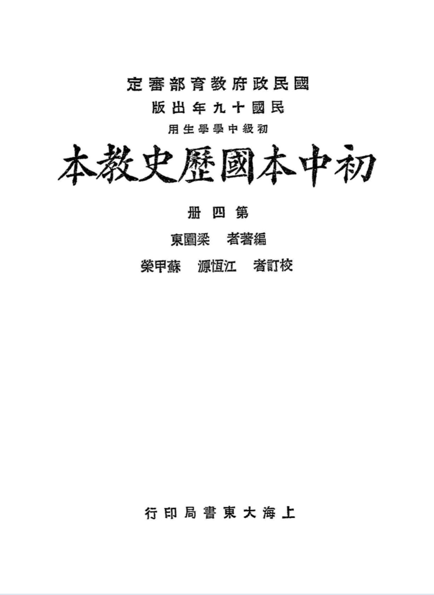

Occurrences
16
Exact minzu hits in this book

Textbook
This view contains all KWIC results for 民族 in this book, followed by the book's individual frequency result.
This table lists every minzu KWIC result found in this textbook.
| No. | Left context | Keyword | Right context |
|---|---|---|---|
| 102 | 至元末(公曆紀元前二二〇年丨紀元後一三七七年)(5a)近世期|明至淸末(一三七七|一九一一)(二)以 | 民族 | 的分合爲標準;可分五期:本國歷史編輯大意三 |
| 103 | 本國歷史編輯大意四中國歷史的演變,有非原於社會的變動,而只是由於古代式的 | 民族 | 遷徙者;由此觀察:(1)在秦|漢以前,全爲原始民族的衝突混合時期。(2)至秦|統一,原始民族的衝突, |
| 104 | 歷史的演變,有非原於社會的變動,而只是由於古代式的民族遷徙者;由此觀察:(1)在秦|漢以前,全爲原始 | 民族 | 的衝突混合時期。(2)至秦|統一,原始民族的衝突,吿一段落,而北方民族,亦由匈|奴統一,秦漢間與匈奴 |
| 105 | 古代式的民族遷徙者;由此觀察:(1)在秦|漢以前,全爲原始民族的衝突混合時期。(2)至秦|統一,原始 | 民族 | 的衝突,吿一段落,而北方民族,亦由匈|奴統一,秦漢間與匈奴發生關係,所引起交通西域,漸至西北民族侵入 |
| 106 | :(1)在秦|漢以前,全爲原始民族的衝突混合時期。(2)至秦|統一,原始民族的衝突,吿一段落,而北方 | 民族 | ,亦由匈|奴統一,秦漢間與匈奴發生關係,所引起交通西域,漸至西北民族侵入,構成漢|末兩|晉南北|朝的 |
| 107 | 原始民族的衝突,吿一段落,而北方民族,亦由匈|奴統一,秦漢間與匈奴發生關係,所引起交通西域,漸至西北 | 民族 | 侵入,構成漢|末兩|晉南北|朝的混亂。其間約八百餘年;在此期間,文化制度,皆有一貫系統可尋,到隋唐始 |
| 108 | ,到隋唐始一大變(3)由隋|唐!統一,直至元|末,其間雖有五|代之紛擾,及宋之統一,但遼|金|元北方 | 民族 | 之侵入,實自|唐末開始,正與唐代之統一勢力相應,而南宋之遷徙,正與東晉所受之壓迫相類似;卽以文化論, |
| 109 | ,而其初宣傳與籌商,亦幾經困難,始克實現,今略述其原委,以爲現代史的開端。當淸|室末年,國內外旣有『 | 民族 | 革命』與『君主立憲』兩種思想,其主張君主立憲的康有爲一派,固直接以保存淸|室及光|緒,採取立憲政體爲 |
| 110 | 主立憲』兩種思想,其主張君主立憲的康有爲一派,固直接以保存淸|室及光|緒,採取立憲政體爲目的。而主張 | 民族 | 革命的革命黨人,初時對於革命成功後應建設何本國歷史第四册一 |
| 111 | 次殖民地。中|國人雖疾首痛心、早欲奮發振興,然國際間的情勢不變,帝國主義者的勢力不稍減退,在壓迫下的 | 民族 | ,竟無法興起。直到最近七八年間,帝國主義者的侵略壓迫,雖未能盡除,然在外交上已稍有轉機,此種轉機卽是 |
| 112 | ,由資本主義制度裂痕的顯露,使帝國主義者本身受剝削的人民,激起爲反抗鬭爭,此種情緒,蔓延於一切被壓迫 | 民族 | ,變爲無國境的共同聯合向帝國主義進攻,不論弱小民族與非弱小民族之受壓迫的,都相互爲同情的提攜。此種轉 |
| 113 | 的人民,激起爲反抗鬭爭,此種情緒,蔓延於一切被壓迫民族,變爲無國境的共同聯合向帝國主義進攻,不論弱小 | 民族 | 與非弱小民族之受壓迫的,都相互爲同情的提攜。此種轉變,尤爲重要,使帝國主義者雖名義上亦無所藉口,以再 |
| 114 | 爲反抗鬭爭,此種情緒,蔓延於一切被壓迫民族,變爲無國境的共同聯合向帝國主義進攻,不論弱小民族與非弱小 | 民族 | 之受壓迫的,都相互爲同情的提攜。此種轉變,尤爲重要,使帝國主義者雖名義上亦無所藉口,以再撲滅此種反抗 |
| 115 | 的提攜。此種轉變,尤爲重要,使帝國主義者雖名義上亦無所藉口,以再撲滅此種反抗,此實爲一切被壓迫的弱小 | 民族 | 最有效的理論保障,以與從前八十餘年來狹隘的愛國主義相比較,其爲便利於被壓迫民族的興起實甚多,此其二。 |
| 116 | 此實爲一切被壓迫的弱小民族最有效的理論保障,以與從前八十餘年來狹隘的愛國主義相比較,其爲便利於被壓迫 | 民族 | 的興起實甚多,此其二。有此二點,中|國百年來反本國歷史第四册九七 |
| 117 | 若郁_達夫等爲代表,刊物有創造週報創造_日報創造_月刊等。截至最近,中|國文壇方爭辯於無產階級文學及 | 民族 | 文學問題,頗有進而列於世界文壇的趨勢。(二)哲學思想的介紹,最盛於民|國八九十年間,其初有美|國實驗 |
Occurrences
16
Exact minzu hits in this book
Analysis chars
43,264
Cleaned characters used as denominator
Per 10k chars
3.70
Normalized frequency
| Subject | History |
|---|---|
| Textbook | 初中本国历史教本 |
| Keyword | minzu (民族) |
| Raw occurrences | 16 |
| Occurrences per 10,000 analysis characters | 3.70 |